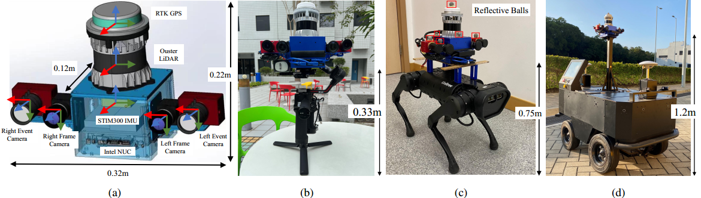
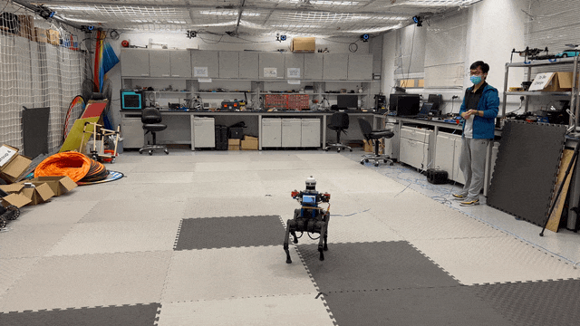
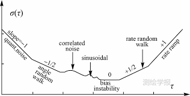
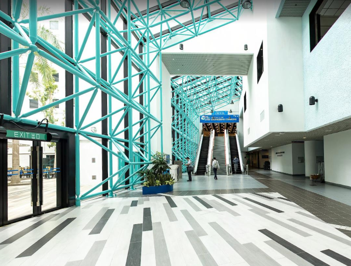
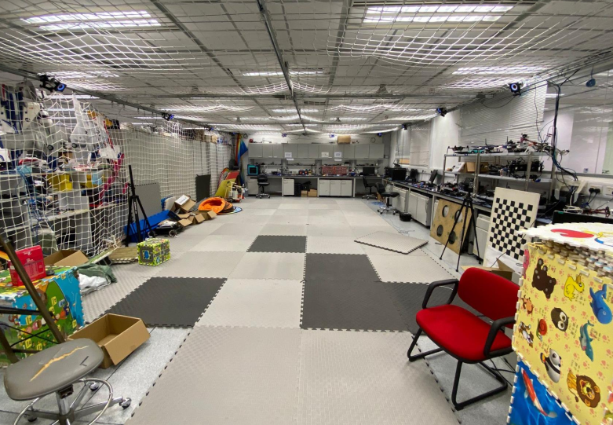
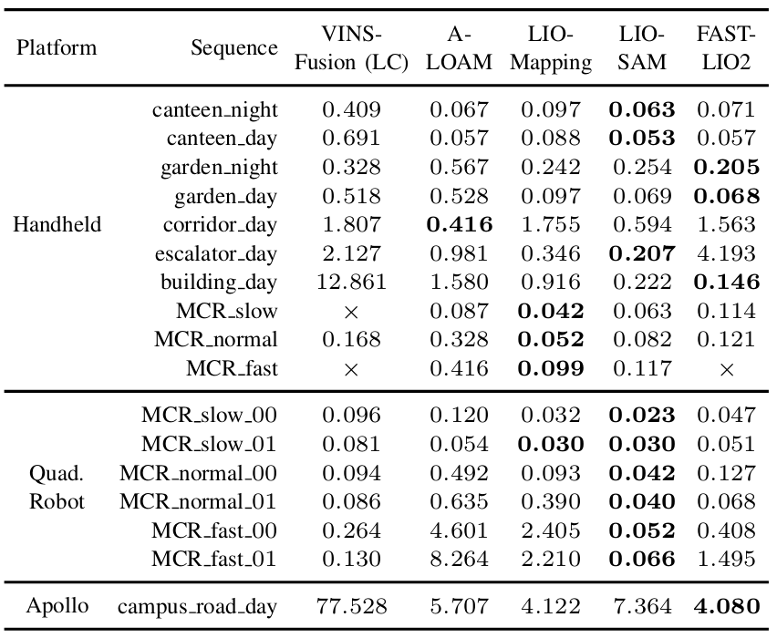

FusionPortable
A Multi-Sensor Campus-Scene Dataset for Evaluation of Localization and Mapping Accuracy on Diverse Platforms

News¶
- (20250201) Data can be downloaded from Baidu Wang Pan with the code f66z.
- (20250201) Data can be downloaded from Google Drive.
Introduction¶
We consider that a desirable dataset should fulfill the following four requirements:
- Various sensors (LiDARs, cameras, IMU, etc.).
- Various robotic platforms with diverse motion patterns.
- Sequences cover from room-scale (meter-level) to large-scale (kilometer-level).
- Benchmarking for different tasks.
We are motivated to propose the FusionPortable dataset, which is initially intended to support odometry, localization, mapping, and some perception tasks. We advance a self-contained, portable, and versatile multi-sensor suite. We construct a dataset that covers a variety of environments on the campus by exploiting multiple robot platforms for data collection. We also provide ground truth for the decouple localization and mapping performance evaluation.
Data Collection Platforms¶
Sensors¶
- 128-beam Ouster LiDAR (OS1, 120m range)
resolution: (128x2048) - FILR BFS-U3-31S4C stereo cameras
resolution: (1024x768) - DAVIS346 stereo cameras
resolution: (346×240) - STIM300 IMU
- ZED-F9P RTK-GPS
Various Platforms¶

Third-View of Data Collection¶
| Environment | Platform | Preview |
|---|---|---|
| Garden | Handheld |  |
| Motion Capture Room | Quadrupled Robot |  |
Download¶
Data Organization¶
FusionPortable/
├── calibration_files/ // Intrinsics & extrinsics of sensors
└── 20220209_calib/
└── <sensor_name>.yaml // e.g., ouster00.yaml, frame_cam00.yaml
├── groundtruth/
└── map/ // Ground-truth maps
└── <date_env>/
├── scan/
└── <scan_id>.pcd // Individual scan
├── merged_scan.pcd // Merged scan (resolution: 1cm)
└── transformation.yaml // Transformation of each scan
└── traj/ // Ground-truth trajectories
└── <date_env>.txt // e.g., 20220215_canteen_night.txt
└── sensor_data/
└── <platform>/ // Platforms, e.g., handheld
└── <date_env> // e.g., 20220215_canteen_night
├── <date_env>.bag
├── <date_env>.bag.7z
├── data/
└── data_ref_kitti/
Note:
1.<date_env>.bag raw rosbag.2.
<date_env>.7z compressed rosbag.3.
data/ stores indivisual sensor data files with timestamps from timestamps.txt.4.
data_ref_kitti/ follows the KITTI format to store sensor data files from data/.Download¶
Please click these below links to download:
Option 1 (recommended, long-term maintenance): download data from Google Drive Please click this link to download all the dataOr use this link:
https://drive.google.com/drive/folders/17asiPqNyudKR-VCqCnjd0Z0v5sS0f7qI?usp=drive_link
Option 2 : download data from the server in Hong Kong
1. sensor_data -
pwd: fusionportable
2. ground-truth trajectories and maps - pwd: fusionportable
3. calibration_files - pwd: fusionportable
Note: Extract the ROS bag from .7z files in the terminal: 7z x <filename>.7z
Sequences¶
| Type | Platform | Picture | Sequence | Preview |
|---|---|---|---|---|
| Calibration | Handheld |  |
20220209_StaticTarget_SmallCheckerBoard_9X12_30mm | |
| Calibration | Handheld |  |
20220215_DynamicTarget_BigCheckerBoard_7X10_68mm | |
| Calibration | Handheld |  | 20220209_Static_IMUs_3h20mins | |
| Handheld |  |
20220216_canteen_night | preview | |
| Handheld | |
20220216_canteen_day | preview | |
| Handheld |  |
20220215_garden_night | preview | |
| Handheld | |
20220216_garden_day | preview | |
| Handheld |  |
20220216_corridor_day | preview | |
| Handheld |  |
20220216_escalator_day | preview | |
| Handheld |  | 20220225_building_day | preview | |
| Handheld |  | 20220216_MCR_slow | preview | |
| Handheld | 20220216_MCR_normal | preview | ||
| Handheld | 20220216_MCR_fast | preview | ||
| Quadruped Robot |  |
20220219_MCR_slow_00 | preview | |
| Quadruped Robot | |
20220219_MCR_slow_01 | preview | |
| Quadruped Robot | |
20220219_MCR_normal_00 | preview | |
| Quadruped Robot | |
20220219_MCR_normal_01 | preview | |
| Quadruped Robot | |
20220219_MCR_fast_00 | preview | |
| Quadruped Robot | |
20220219_MCR_fast_01 | preview | |
| Apollo Vehicle |  |
20220226_campus_road | preview | |
{kind=link}
{kind=link}
{kind=link}
{kind=link}
{kind=link}
{kind=link}
{kind=link}
{kind=link}
{kind=link}
{kind=link}
{kind=link}
{kind=link}
{kind=link}
{kind=link}
{kind=link}
{kind=link}
{kind=link}
Some High-Resolution GT Maps¶
| Environment | Platform |
|---|---|
| Garden | |
| Escalator |  |
| Building |  |
Tools¶
The development tool can be used by clicking the button below
Evaluation¶
Evalaution of Trajectories¶

Issues¶
If you have any issues with the theme, please report them on the repository:
Publications¶
- FusionPortable: A Multi-Sensor Campus-Scene Dataset for Evaluation of Localization and Mapping Accuracy on Diverse Platforms
Jianhao Jiao*, Hexiang Wei*, Tianshuai Hu*, Xiangcheng Hu*, Yilong Zhu, Zhijian He, Jin Wu, Jingwen Yu, Xupeng Xie, Huaiyang Huang, Ruoyu Geng, Lujia Wang, Ming Liu
Presented at IROS 2022
[Arxiv] [bibtex]